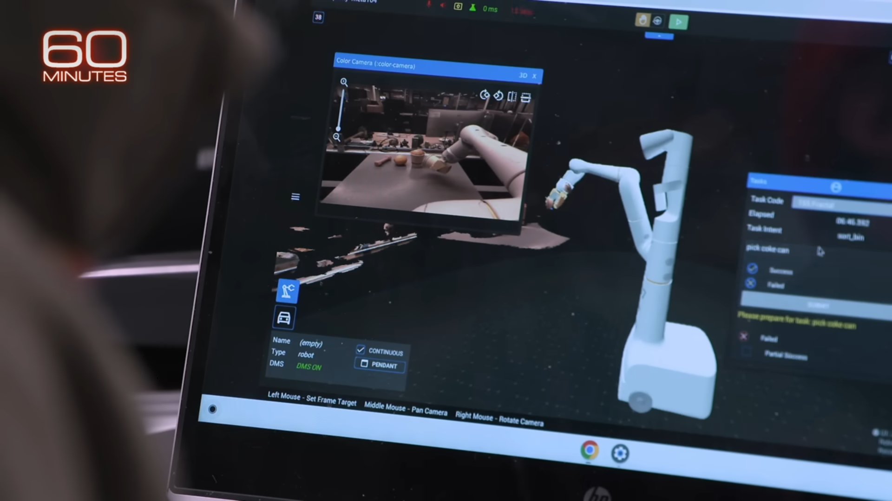
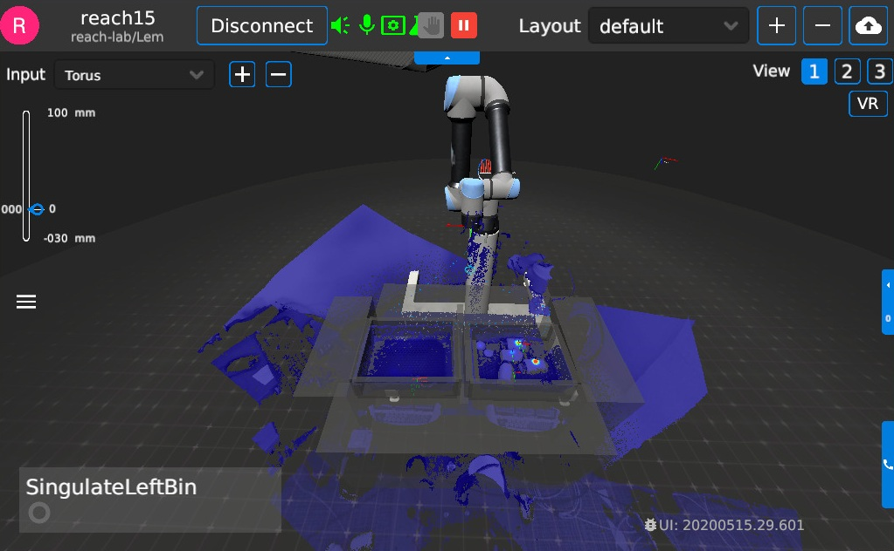
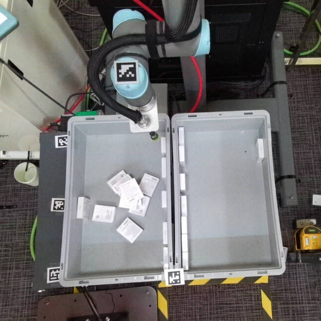
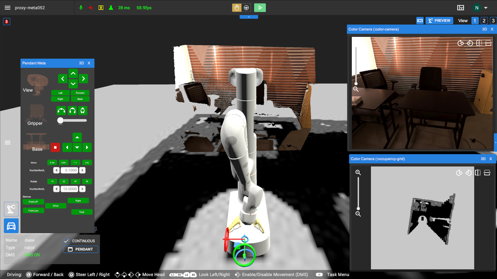
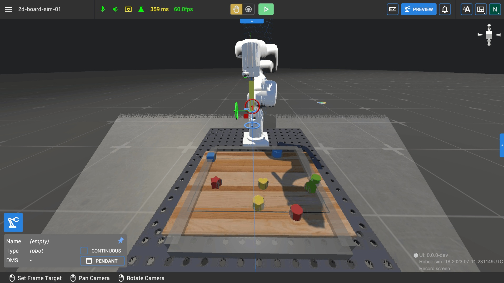
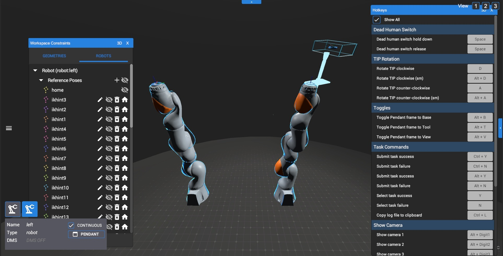
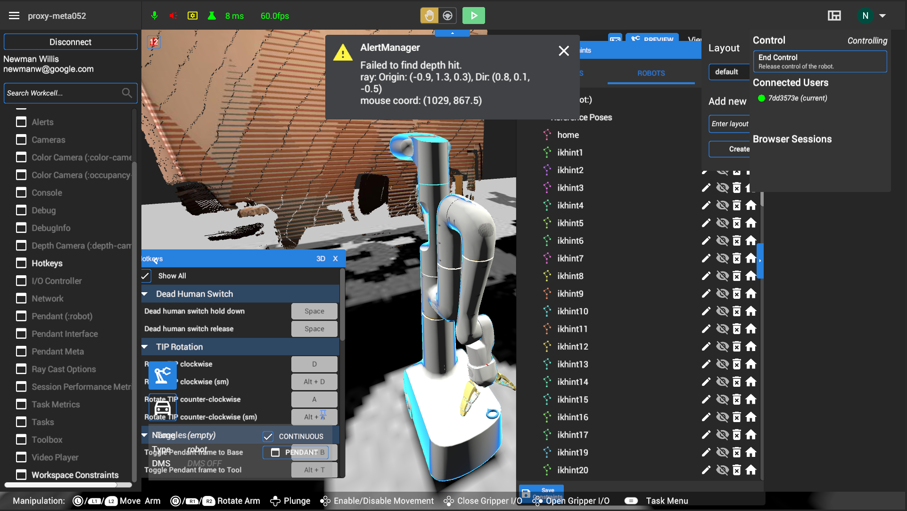
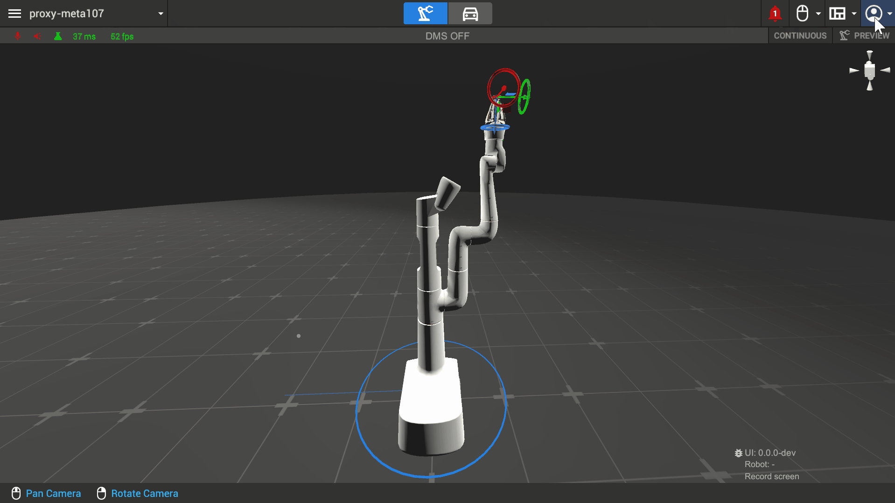

Google Robotics UI
3D UI used for robotics teleoperation and AI research at Google DeepMind

Overview
The Robotics UI was a program used internally at Google for robotics teleoperation and 3D visualization that also evolved as an AI research and data collection tool. Web and desktop versions allowed researchers and operators to connect to multiple kinds of robots across several Google buildings. I added new features and contributed to integrating new robot types into the application. The bulk of my work, however, involved fixing, updating, and polishing the many features of the UI that had accumulated over the life-cycle of the project, as well as making large-scale reorganizations of the UI as a whole to make it more intuitive and usable.


Robot arm environment visualized in the UI (2020 build)
The corresponding robot arm in the real world

Multi-Robot UI
The UI supported robots from a range of manufacturers, and each new hardware addition brought unique features that had to be accounted for in the interface. When I joined, all connected robots were single-arm. Much of the active development at the time was around supporting Google's own EDR Meta robot, which introduced driving and head movement capabilities on top of the standard arm controls.

Franka Emika Panda robot moving blocks
UR robot folding a T-shirt
EDR Meta robot standing solemnly
My earliest major milestone on the project was integrating the first bi-arm robot into the UI and expanding VR controller support to operate both arms.

Much of the initial work was just about extending the existing single-arm logic to support two. Several features needed to be duplicated and updated to read in data for each arm properly. Mouse and keyboard controls were still designed to operate one arm at a time, so the logic primarily just needed to be able to switch between them correctly.
However, the codebase was hardcoded with the assumption that there would only ever be one arm. That meant using two VR controllers to control both arms at once would require a significant refactor. I converted arms into their own objects, allowing bi-arms to easily extend that logic for two, updating the single-arm code as well as a by-product.
I demoed the result using a simulated version of the Kuka bi-arms to a room full of Googlers, showcasing the first time bi-arm controls were operated in the UI.
Improving the UI/UX
The Robotics UI was a long-running and frequently reimagined initiative with numerous engineers rotating in and out over its history, often with limited experience in the Unity software it was made in. This resulted in a sprawl of partially implemented and outdated features added wherever they could fit, with little consideration for the UI as a whole. What started as fixing individual features would regularly surface the need for larger structural overhauls. I took it upon myself to make these changes, especially as more new features were added by the team.
Initial UI state

To just highlight a few clearly visible issues above, you can see how the transparent UI components bleed into the contents underneath them, multiple dropdown menus in the top right stay open on click-away, the central viewing area has many buttons and text that can be obstructed by configurable windows, and a right-side menu opens to an empty panel.
Later redesign stage

The gif above shows an intermediate stage of the final redesign, but the core improvements are visible. The visuals are more consistent and uniform — transparent components are made solid and given their own space, buttons and menus look and behave predictably, the center view is free of buttons that get in the way of windows and visuals, and unused or duplicate features are removed. And beyond addressing existing issues facing the UI, the design was built with flexibility for potential future features as well. Dedicated areas for new buttons and menus meant features could be added without crowding the viewport, and parts of the UI automatically adapted to different robot types and the control method in use.
Python-Driven UI
What was the result? Shipped? Won an award? Learned something key? Show the impact of your work here.

Outcome
What was the result? Shipped? Won an award? Learned something key? Show the impact of your work here.